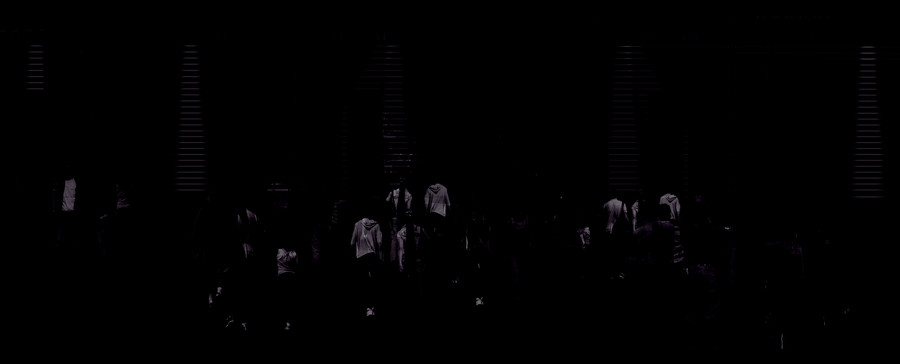
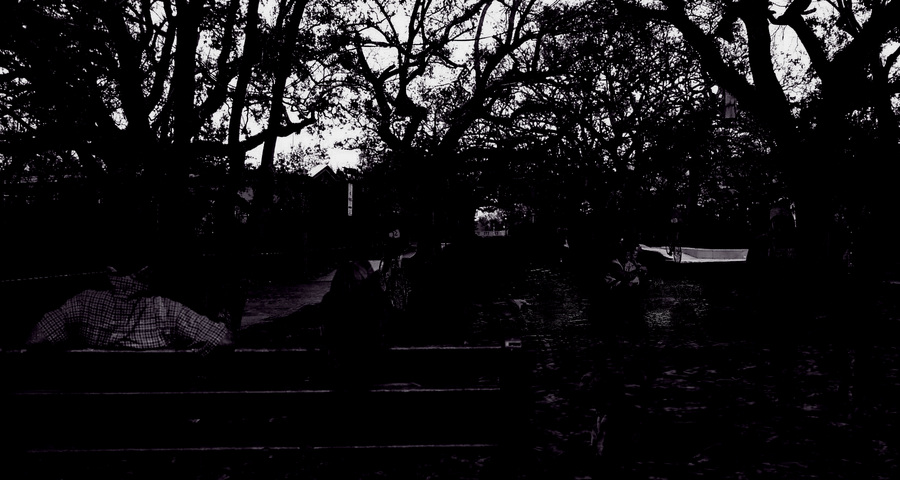
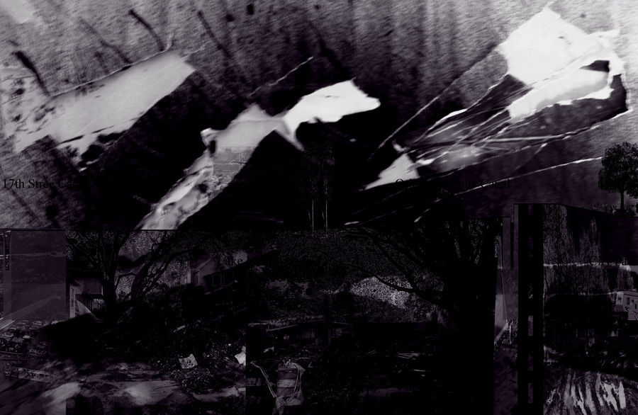

Digital Representation · Landscape
This course intends to present you with contemporary methods of digital representation for landscape architects. There will be an intensive exploration of the methodologies, techniques, and theories occurring in digital representation in the typical landscape architecture office. We will also explore appropriate CG techniques in other visual arts industries in order to expand our repertoire of skills. While focusing on creating images and animations from 3d animation software there will also be an intense focus on the art of storytelling within representation.“…an intense focus on the art of storytelling within representation.”



About the course
LA 7101 is a graduate course in the LSU School of Landscape Architecture presenting contemporary methods of digital representation for landscape architects. Across the semester the course moves through SketchUp, 3ds max, Photoshop, Civil 3D, Flash, and After Effects — building from site modeling to technical illustration, digital vegetation, terrain modeling, narrative still imagery, and animated storytelling.
Faculty: Bradley Cantrell. Meeting: Monday, Wednesday, and Friday, 8:30–10:30. Location: CADGIS Magnolia Lab and COAD RM 308.
This page documents the LA 7101 series (Spring 2006–2007). Content is transcribed from the Spring 2007 syllabus and project briefs — the most complete offering preserved in the archive.